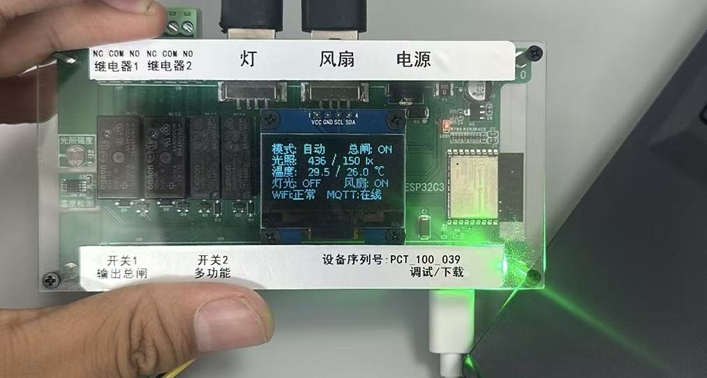

产品概述

PCT_100 化工控制实训装置实物图
PCT_100 是面向嵌入式开发教学的化工过程控制实训装置，采用 ESP32-C3-WROOM-02-N4 模组，集成多路传感器、继电器、OLED 显示屏及 WS2812 全彩指示灯，支持本地控制、传感器联动、WiFi 联网、MQTT 远程监控与多线程并行处理。
技术规格
| 项目 | 参数 |
|---|---|
| 主控芯片 | ESP32-C3-WROOM-02-N4 (RISC-V 160MHz) |
| 无线通信 | Wi-Fi 802.11 b/g/n (2.4GHz) + BLE 5.0 |
| Flash / SRAM | 4MB Flash / 400KB SRAM |
| 温度传感器 | DS18B20 (GPIO10), -55~+125°C, 精度 ±0.5°C |
| 光照传感器 | GL5516 + 10KΩ 分压 (GPIO1 ADC) |
| OLED 屏幕 | SH1106 128×64 I2C, SDA=GPIO4, SCL=GPIO5 |
| 全彩 LED | WS2812B ×1, GPIO0 单总线驱动 |
| 继电器 | 4 路 5V (GPIO 2,3,6,7) |
| 电源 | Type-C 5V → ME6211 LDO → 3.3V |
| 操作系统 | FreeRTOS (ESP-IDF) |
GPIO 引脚分配
| GPIO | 功能 | GPIO | 功能 |
|---|---|---|---|
| 0 | WS2812 全彩灯 | 10 | DS18B20 温度 |
| 1 | GL5516 光敏 ADC | 20 | KEY1 总开关 |
| 2 | 继电器 1 | 21 | KEY2 按键 |
| 3 | 继电器 2 | 4 | OLED SDA |
| 6 | 继电器 3 / 灯光 | 5 | OLED SCL |
| 7 | 继电器 4 / 风扇 | 9 | 板载 LED |
系统架构
传感器层
DS18B20 · GL5516
DS18B20 · GL5516
→
ESP32-C3
FreeRTOS 三线程
FreeRTOS 三线程
→
执行层
4路继电器 · WS2812
4路继电器 · WS2812
→
显示/通信
OLED · MQTT · WiFi
OLED · MQTT · WiFi
软件模块
| 模块 | 文件 | 说明 |
|---|---|---|
| 主程序 | PCT_100.ino | FreeRTOS 三线程、传感器采集、逻辑控制 |
| 按键 | key.h/cpp | KEY1 轮询消抖、KEY2 CHANGE 中断长短按 |
| 继电器 | relay.h/cpp | 4路 + 板载LED, 位掩码控制 |
| 光敏 | adc_light.h/cpp | ADC 读取、lux 换算、阈值联动 |
| 温度 | temp_sensor.h/cpp | DS18B20 异步读取、阈值联动 |
| OLED | oled.h/cpp | SH1106 U8G2 驱动, 5行中文UI |
| 彩灯 | ws2812.h/cpp | WS2812B 6种灯效模式 |
| WiFi | wifi_config.h/cpp | STA模式、Flash凭据、串口配网 |
| MQTT | my_mqtt.h/cpp | JSON指令、状态主动上报 |
WS2812 灯效
🔴🟢 严重警报
灯+风扇同时开启RGB 各双闪 100ms
🔴🟢🔵 光照越限
仅灯光开启RGB 各 300ms
🔴🟢🔵 温度越限
仅风扇开启RGB 各 500ms